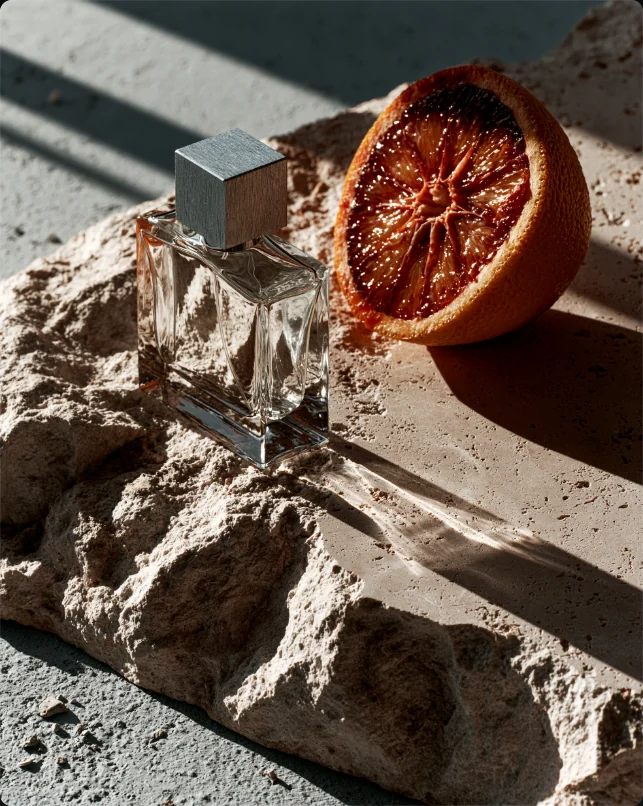
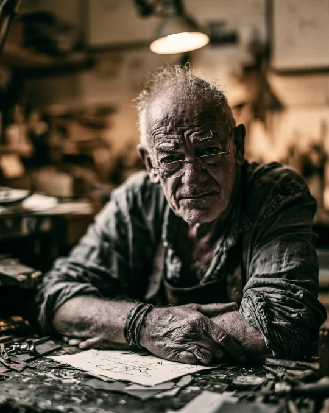
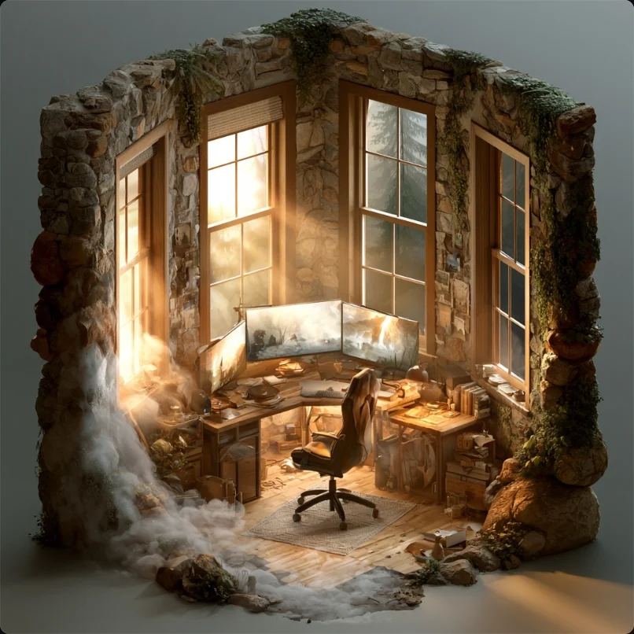
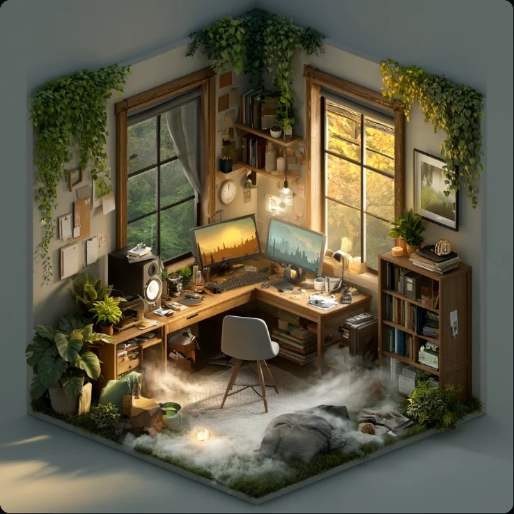
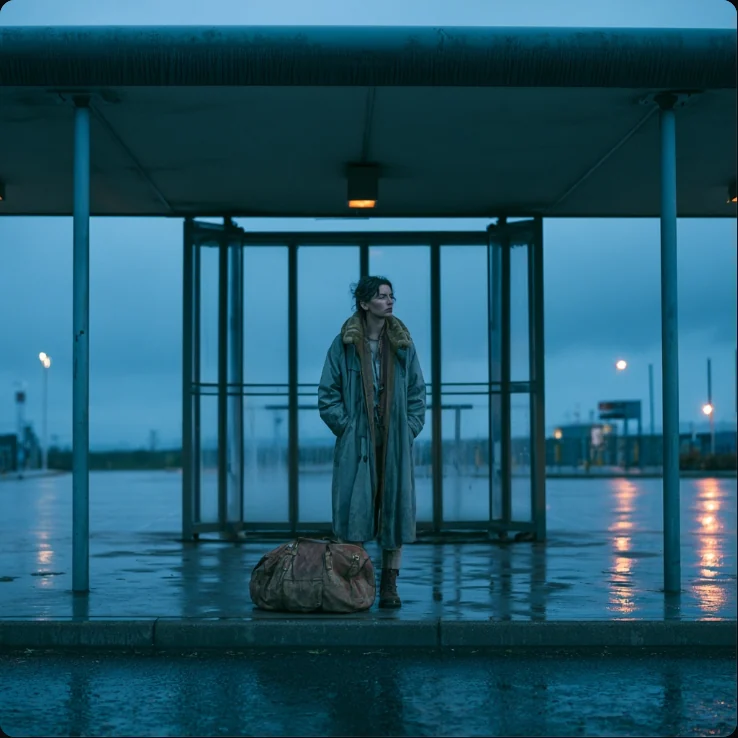
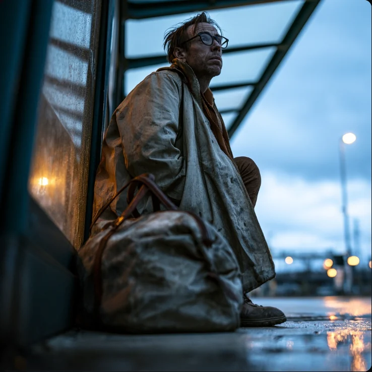
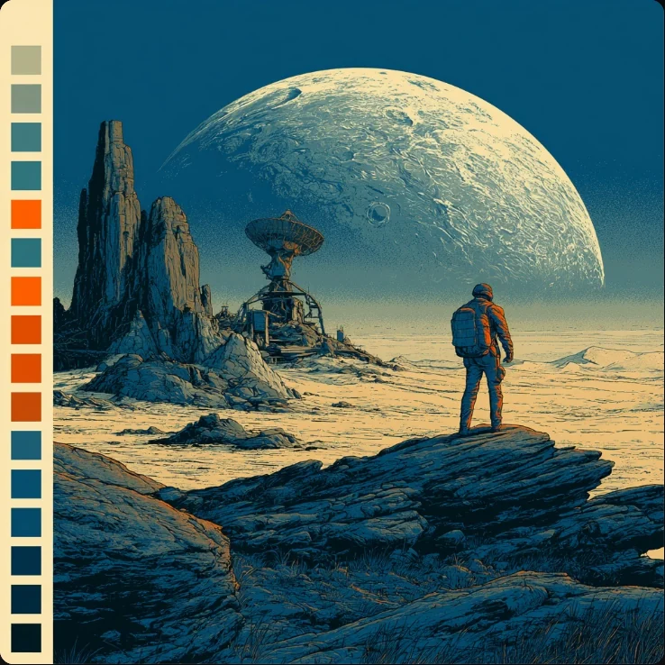
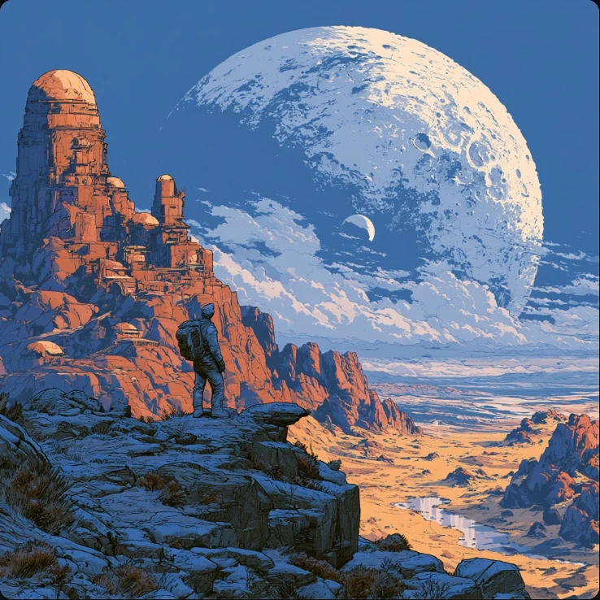

01

C0001/20 Jul 2026
AI Art / Video / Music
"Product material truth and hierarchy / material-verbs / control"
Untitled works. Frames are identified by date and queue reference rather than a title. Where the original prompt was logged, it is shown as caption.








A creative explorer at the intersection of art and artificial intelligence. Through Midjourney, Suno, video models, and careful sequencing, Axy Lusion becomes a cinematic archive of images, sound, and moving-image experiments.
Every frame is a collaboration between human direction and model capability: prompts refined through iteration, then indexed here by date and frame reference.